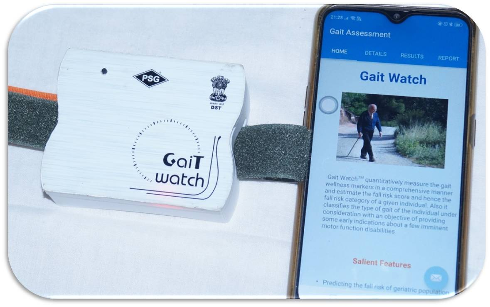
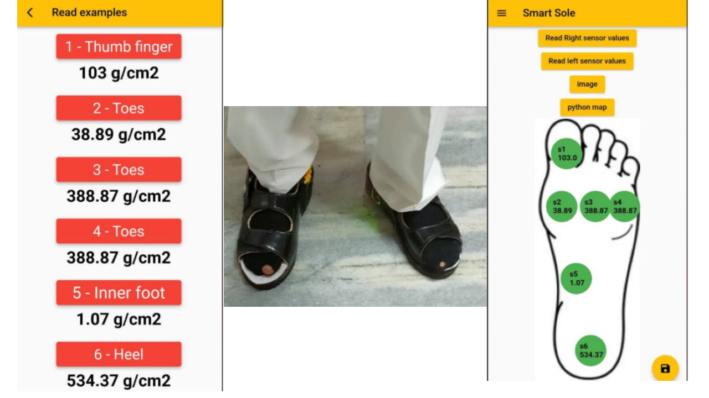
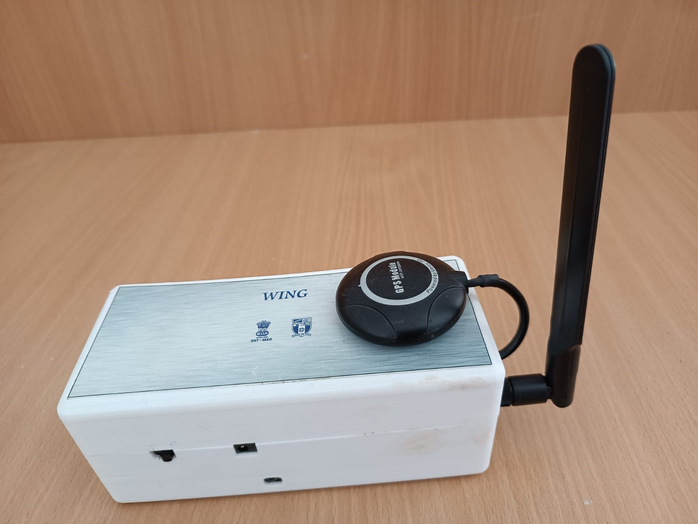
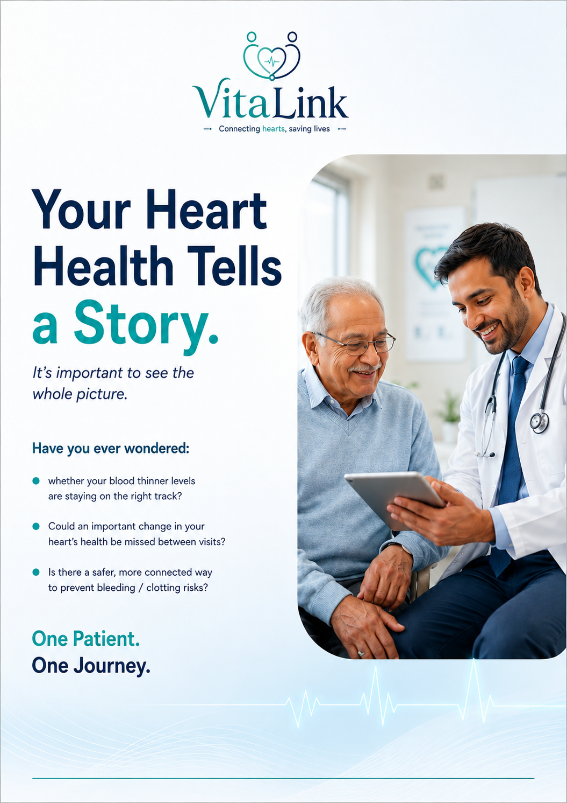
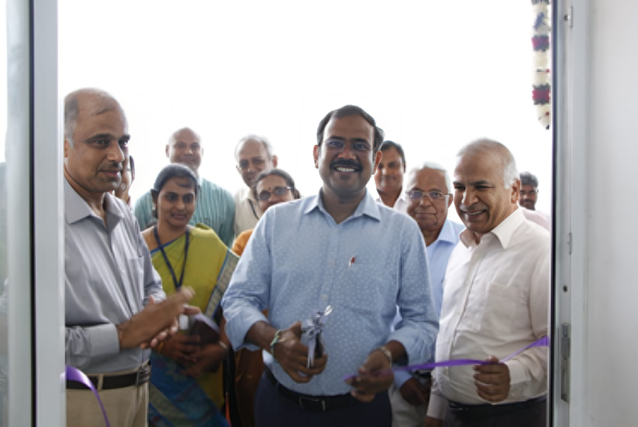
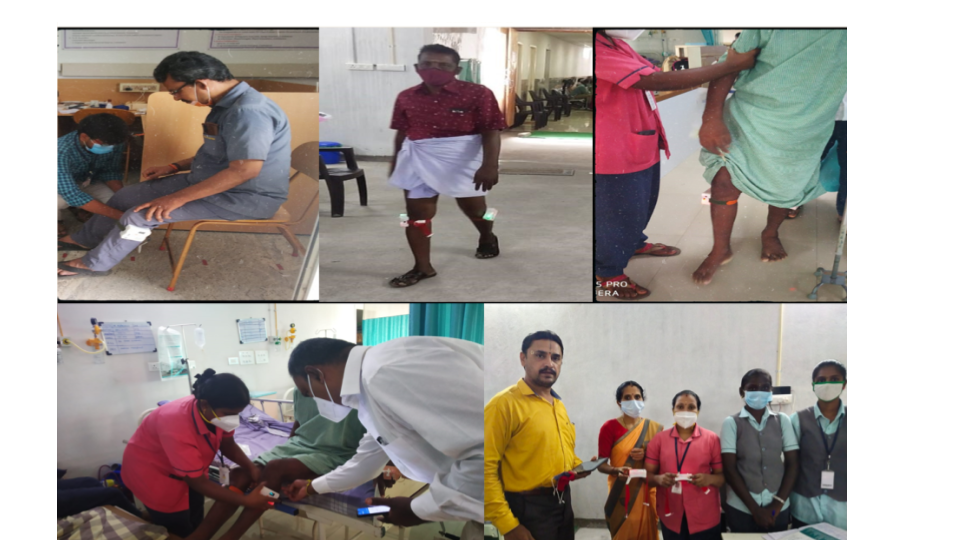
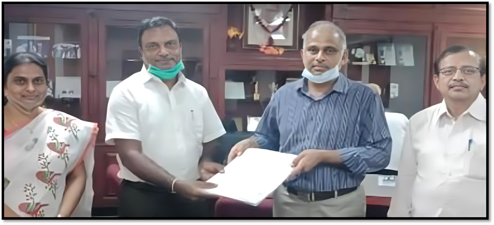

Dr. L. S. Jayashree
Professor, Department of Computer Science & Engineering
PSG College of Technology, Coimbatore, India
Dr. L. S. Jayashree is a Professor in the Department of Computer Science and Engineering at PSG College of Technology, Coimbatore, with over 25 years of teaching experience and 20+ years of research leadership. She received her B.E. in Electronics & Communication Engineering (1995, GCT Coimbatore), M.E. in Computer Science & Engineering (1997, GCT Coimbatore), and Ph.D. in Computer Science & Engineering (2009, Anna University).
Her core research interests span the Internet of Things (IoT), Wearable Assistive Systems, Edge Analytics, Mobile Networks, and Artificial Intelligence in Healthcare. She played a pivotal role in establishing the DST-supported Centre of Excellence for Assistive Technology and Rehabilitation Engineering Solutions (PSG CARES) in 2019, where she serves as Professor-in-Charge and Coordinator, guiding translational engineering designs from proof-of-concept (TRL 3) to market-ready clinical validation (TRL 9).
She actively participates in the innovation ecosystem, serving as the Vice President of the PSG Institution's Innovation Cell (IIC) since 2020 and playing an instrumental role in drafting the institutional Start-up Policy. She is a Senior IEEE Member, a Fellow of the Institution of Engineers (India), and a member of the ACM India Expanding Regions Tech Policy Committee.
indexed publications and conference contributions
Ph.D. scholars guided to completion
technology transfers highlighted in the innovation journey
funding mobilized through translational research initiatives
Education & Expertise
Academic background, technical specializations, and professional board memberships
Educational Background
Ph.D. in Computer Science
Anna University, Chennai
M.E. in Computer Science & Eng.
Government College of Technology, Coimbatore
B.E. in Electronics & Comm. Eng.
Government College of Technology, Coimbatore
Professional Memberships
-
Senior Member, IEEE (USA)
-
Fellow, Institution of Engineers (IEI)
-
VP, Institution's Innovation Cell (IIC)
-
Member, ACM India Tech Policy Committee
Subject Expertise
Patents & Sponsored Projects
Intellectual Property & Externally Funded R&D Initiatives
System and Method for Predicting a Fall State and a Gait Wellness of a Person
A novel IoT framework mapping real-time gait vectors onto fall risk levels with predictive analytics.
Design Registration under Medical Diagnostic Device Class
Physical ergonomic form factor design of clinical diagnostic gait and balance tracking wearable.
A Wearable Navigation Assistant System for Cognitively-Impaired Individual
Active alert cues and routing modules for memory support and wandering tracking for patients with dementia.
Artificial Intelligence Based Assistive Device for Fitness and Rehabilitation Applications
Embedded machine learning model classifying posture correctness on wearable MCU for rehab feedback.
Sponsored Research Projects
Design & Development of WING Kit
Design and Development of a Wearable Navigation Guidance (WING) Kit for Elderly with Dementia with a Fall Predictor.
Role: Principal Investigator
Stroke Virtual Reality Rehab
Design and development of Virtual Reality based Rehabilitation Device for Upper Extremity Stroke Survivors.
Role: Co-Investigator
Thoracic Fluid Wearable
Wearable Thoracic Fluid Content Measurement Prototype for Congestive Heart Failure Patients.
Role: Principal Investigator
Cardiology Joint Innovative Projects
Joint Innovative Projects for Preventive Cardiology Applications.
Role: Principal Investigator
Aero Acoustic Analysis Code
Aero Acoustic Analysis Code Development for Internal Flow Missile Systems.
Role: Co-Investigator
Dengue Outbreak ML Analysis
Dengue Outbreak Analysis in Urban Slum Area of Chennai using Machine Learning.
Role: Principal Investigator
Research Journey — PhDs Guided
Supervising advanced doctoral research training in Computer Science & Engineering
| Scholar | Thesis / Research Area | Status |
|---|---|---|
| Completed (6) | ||
| Dr. Geethu Mary George | "Investigations on User Privacy Preservation During Data Storage and Distribution in Supplychain System Using Ethereum Smartchain" (2024) | Awarded |
| Dr. R. Suganya | "Policies based Approaches and Techniques for QOS Adaptations in Mobile Ad-Hoc Network" (2019) | Awarded |
| Dr. Vijayalakshmi | "Application of Soft Computing Techniques for Intelligent Sensor Data Aggregation in Structural Health Monitoring" (2017) | Awarded |
| Dr. N. Rajathi | "Certain Investigations on Soft Computer Techniques for Sensor Data Processing in Precision Agriculture Applications" (2017) | Awarded |
| Dr. R. Lakshmi Devi | "Empirical Studies on the Performance of Soft Computing Techniques for the Development of Early Warning System for Dengue Outbreak" (2017) | Awarded |
| Dr. K. Akila | "Early Detection of Breast Cancer using Image Processing Algorithms and Estimation of Overall Risk Grade" (2017) | Awarded |
| In Progress (3) | ||
| K. Madhana | Internet of Things (IoT) & Edge Analytics in Assistive Living ecosystems | In Progress |
| G. Selvakumar | Computer Networks Performance Optimization & Evolutionary routing | In Progress |
| Ongoing Ph.D. Scholar | Smart Sensor Systems & Healthcare Wearables | In Progress |
Research Publications
Search and filter through 300+ scientific outputs in journals and conferences
Journal Quartiles
Scopus ClassificationCited by
View All| All | Since 2021 | |
|---|---|---|
| Citations | 787 | 442 |
| h-index | 12 | 10 |
| i10-index | 14 | 12 |
Academic Outreach & Books
Publications of books, delivered guest lectures, and institutional programs organized
Products & Innovations
Wearable healthcare solutions validated in clinic and transferred to industry

TRL-9 CommercializedGait Watch
Wearable Fall Prediction and Gait Analysis System for continuous assessment of elderly and neurological patients.

Clinically ValidatedDiaSole
Smart footwear insole for foot pressure monitoring in podiatry and diabetic neuropathy applications.

DST FundedWING Kit
Wearable Navigation Guidance system for elderly dementia patients, preventing wandering and tracking fall risks.
Memory Aide
A companion device offering cognitive prompts, activity logs, and prescription alerts to support dementia patients.

Mobile ApplicationVitaLink
Dual-access doctor-patient mobile application supporting personalized anticoagulation dosage management.
CaRes Fitwatch
Wearable Cardio Endurance Monitor automating the 6-Minute Walk Test (6MWT) for preventive cardiology.
BalancePoseAI
Virtual training system with live skeleton-tracking feedback for home balance exercises in older adults.
Myora
AI-enabled voice and handwriting recognition system for automated EMR documentation for clinicians.
Awards & Recognitions
Honoring leadership in innovation, teaching, and engineering
{kind=link}
{kind=link}
{kind=link}
{kind=link}
{kind=link}
PSG CARES
Centre of Excellence for Assistive Technology & Rehabilitation Engineering

{kind=link}
Established in 2019, the Centre of Excellence (CoE) for Assistive Technology and Rehabilitation Engineering Solutions (PSG CARES) is a pioneering initiative supported by the Department of Science and Technology (DST).
As the Coordinator and Professor-in-charge, I lead our team in designing, clinically validating, and commercializing wearable assistive devices for geriatric care, stroke rehabilitation, and neurological support.
Clinical Partners
PSG Institute of Medical Sciences & Research, Neuro Foundation, Yazh Physiotherapy
Industry Partners & Consultancy
Agna Inc., L4 Labs, Glibster Lifestyle Inc.
Funding Schemes
DST-SEED, DST-BDTD, DST-TIDE, and BIRAC
Translational TRL Levels
Device development from proof-of-concept (TRL 3) to market-ready validation (TRL 9)
Contact & Connect
Reach out for academic collaborations, research consultancies or CoE partnerships
Academic Email
Office Address
Dept. of Computer Science & Engineering,
PSG College of
Technology,
Coimbatore - 641004, Tamil Nadu, India.
Office Extensions
Tel: +91-422-2572177 (Ext. 4549)
Mobile: +91-9994254502
Academic Profiles
Send a Message



Gait Watch
Wearable Fall Prediction System (TRL 9)
Gait Watch is a clinically validated, smart-wearable system designed for continuous monitoring of gait profiles, posture stability, and real-time fall state classification. The system uses biomedical IMU sensors communicating with edge nodes, mapping gait dynamics to predict fall events in neurological and geriatric care contexts.
Key Achievements & Specs:
- Clinical Trial Validation: Tested with multiple patient batches at PSG IMSR and Neuro Foundation.
- Technology Transfer: Licensed to Agna Inc. in 2020 (5-year validation).
- Hospital Deployment: Active deployment for orthopedic gait camp evaluations.
- IP Status: Protected under Granted Indian Patent:
201941053600.
Title
Description